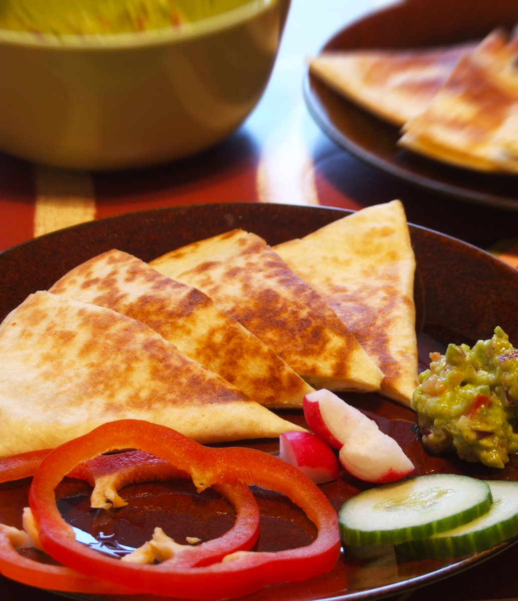

Cheesy Quesadilla

Description
A quesadilla is a Mexican dish consisting of a tortilla that is filled primarily with cheese, and sometimes meats, spices, and other fillings, and then cooked on a griddle or stove. Traditionally, a corn tortilla is used, but it can also be made with a flour tortilla.
A full quesadilla is made with two tortillas that hold a layer of cheese between them. A half is a single tortilla that has been filled with cheese and folded into a half-moon shape.
Ingtedients
- 1 teaspoon vegetable oil
- 4 slices ham, diced small
- 1/4 red bell pepper, diced small
- 2 eggs, beaten
- salt and ground black pepper to taste
- 2 flour tortillas
- 6 slices mozzarella cheese
Steps
- Heat oil in a large skillet over medium heat.
- Add ham and red bell pepper; cook and stir until slightly softened, 3 to 5 minutes. Add eggs; cook, stirring gently, until scrambled and set, 3 to 5 minutes. Transfer to a bowl.
- Wipe out skillet and place 1 flour tortilla on the bottom. Place 3 slices of mozzarella cheese on top. Top with egg mixture and remaining 3 slices mozzarella cheese. Cover with second tortilla.
- Cook until golden, about 1 minute. Flip and continue cooking until second side is golden, about 1 minute more.
Back to main page